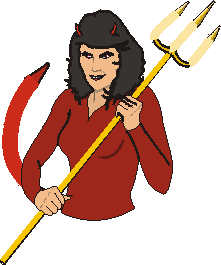
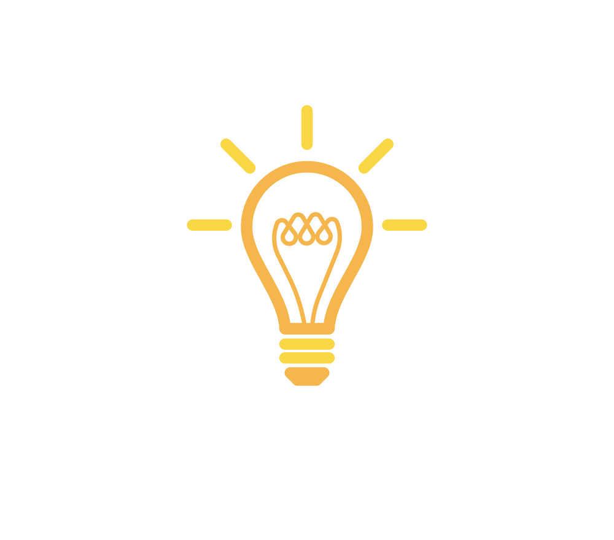
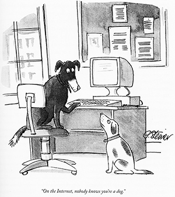
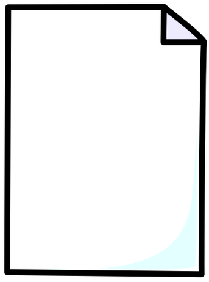
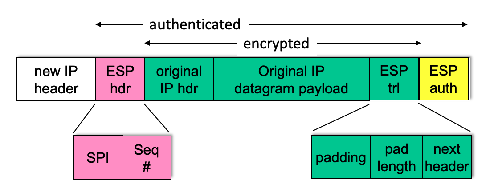
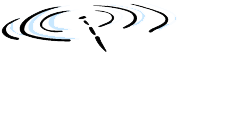

Network Security
Pertemuan 13
Pendalaman Ekstensif: Kriptografi, Authentication, TLS, IPsec, & Firewalls
Referensi: Bahan Ajar Week13.pptx & RPS Jaringan Komputer
Dosen Pengampu:
Network Security: Overview
Sasaran Pembelajaran Pertemuan 13:
- Memahami prinsip-prinsip kriptografi dan penggunaannya melebihi "sekadar kerahasiaan".
- Memahami teknik Autentikasi dan Integritas Pesan.
- Implementasi keamanan praktis di dunia nyata: Firewalls & Intrusion Detection Systems (IDS).
- Keamanan pada tiap layer: Application, Transport (TLS), Network (IPsec), dan Wireless (802.11).

Apa itu Keamanan Jaringan?
Fondasi utama dari keamanan mencakup 4 elemen berikut:
- Confidentiality (Kerahasiaan): Hanya pengirim dan penerima yang sah yang bisa memahami isi pesan (via Enkripsi).
- Authentication (Otentikasi): Pengirim & penerima ingin memverifikasi identitas satu sama lain secara absolut.
- Message Integrity (Integritas Pesan): Kepastian bahwa pesan TIDAK dimanipulasi atau diubah di tengah jalan oleh pihak ketiga.
- Access and Availability: Layanan harus selalu tersedia dan bisa diakses ketika dibutuhkan (Terlindungi dari serangan DoS).
Teman dan Musuh: Alice, Bob, Trudy
Karakter fiktif yang selalu digunakan dalam dunia keamanan jaringan:
- Alice & Bob: Pihak yang ingin berkomunikasi secara aman.
- Trudy (Intruder): Penyusup di tengah jalan. Trudy bisa mencegat pesan, menghapus pesan, atau bahkan menyuntikkan pesan palsu.
Trudy dapat berada di mana saja: sebagai router *rogue*, WiFi sniffer, atau server DNS abal-abal.

Prinsip Kriptografi (Symmetric Key)
Bahasa Kriptografi:
m= plaintext message (Pesan asli)K_A(m)= ciphertext (Pesan yang dienkripsi dengan kunci K milik Alice)
Symmetric Key Cryptography:
Bob dan Alice berbagi KUNCI RAHASIA YANG SAMA (K). Kunci yang dipakai Alice untuk mengunci, sama persis dengan kunci yang dipakai Bob untuk membuka gembok. Pertanyaannya: Bagaimana mereka menyepakati kunci rahasia ini jika mereka belum pernah bertemu?

Kriptografi Simetris: DES dan AES
- DES (Data Encryption Standard): Standar AS tahun 1993 (Kunci 56-bit). Kini sudah TIDAK AMAN. 56-bit bisa dibobol dengan *brute-force attack* dalam waktu kurang dari sehari oleh komputer modern.
- AES (Advanced Encryption Standard): Pengganti DES sejak Nov 2001. Memproses blok 128-bit dengan kunci 128, 192, atau 256-bit. Sangat tangguh! Jika DES bisa dibobol dalam 1 detik, AES butuh waktu 149 triliun tahun untuk dibongkar secara brute-force.

Public Key Cryptography (Asymmetric)
Mengatasi masalah distribusi kunci rahasia pada metode simetris. Pada Public Key Cryptography:
- Alice dan Bob TIDAK BERBAGI kunci rahasia.
- Setiap orang memiliki SEPASANG Kunci: Public Key (Disebarluaskan ke seluruh dunia) dan Private Key (Disimpan rapat-rapat oleh pemiliknya).
Konsep: Jika Alice ingin mengirim pesan rahasia ke Bob, Alice akan membungkus pesannya dengan Public Key milik Bob. Kerennya, satu-satunya cara membuka bungkus tersebut hanyalah dengan Private Key milik Bob!

Matematika Kriptografi: RSA
Semua bit pesan (teks, gambar, video) pada dasarnya adalah sederet angka integer. Mengenkripsi pesan sama artinya dengan merumuskan matematika pada sebuah angka besar.
Mengapa Algoritma RSA Aman?
- RSA bersandar pada fakta matematika bahwa: Sangat mudah mengalikan dua bilangan prima raksasa (
p * q = n). - Namun, sangat, sangat, SANGAT SULIT untuk melakukan faktorisasi (mencari nilai
pdanqjika kita hanya diberi tahu nilain). Itulah pelindung utama RSA.
Authentication (Otentikasi)
Tujuan: Bob ingin Alice "Membuktikan" identitasnya.
- Protokol 1.0: Alice bilang "Saya Alice". (Gagal: Trudy bisa dengan mudah mengaku sebagai Alice).
- Protokol 2.0: Alice mengirim IP Address aslinya. (Gagal: Trudy bisa melakukan *IP Spoofing* memalsukan alamat IP).
- Protokol 3.0: Alice mengirim Password aslinya (Gagal: Trudy bisa menyadap (Sniff) password).
Ancaman Playback Attack (Protokol 3.1)
Protokol 3.1: Alice mengirimkan Password yang SUDAH DIENKRIPSI.
Apakah aman? TIDAK!
Trudy memang tidak bisa membaca isi passwordnya, namun Trudy bisa merekam paket yang terenkripsi itu secara utuh. Besoknya, Trudy mengirim ulang paket rekaman tersebut ke Bob (Playback Attack). Bob akan menerima dan mengotentikasi Trudy sebagai Alice!
Solusi Otentikasi: Menggunakan NONCE
Protokol 4.0: Untuk membuktikan Alice sedang "hidup" dan bukan rekaman masa lalu, Bob mengirim sebuah nilai acak Nonce (Number used ONCE in a lifetime) bernama R.
- Alice WAJIB merespons dengan membalas
Ryang telah dienkripsi menggunakan Kunci Rahasia. - Karena
Rselalu berganti setiap waktu, maka teknik merekam paket (*playback attack*) yang dilakukan Trudy kemarin menjadi tidak berguna.
Man in the Middle Attack (MITM)
Bahkan dengan kunci publik, masih ada celah berbahaya. Saat Alice meminta Public Key Bob, Trudy bisa berada di tengah jalan memblokirnya.
- Trudy mengirimkan Public Key miliknya (berpura-pura itu milik Bob) kepada Alice.
- Alice mengenkripsi pesan cinta ke Bob memakai kunci Trudy. Trudy bebas membaca pesan itu!
- Setelah dibaca, Trudy mengenkripsi ulang dengan kunci Bob dan merelay-nya ke Bob tanpa disadari.
Solusi: Kita butuh pihak ketiga yang menjamin kepemilikan kunci publik!

Message Digest & Fungsi Hash
Mengenksripsi satu dokumen 10.000 halaman memakai RSA akan sangat lambat (memakan CPU). Sebagai alternatif untuk Integritas Data, kita menggunakan Hashing.
- Sebuah file sebesar apa pun, jika dilewatkan Fungsi Hash (misal SHA-256), akan menghasilkan sidik jari (Digest) pendek berukuran persis 256-bit.
- Jika ada SATU KOMA saja yang dirubah dari dokumen 10.000 halaman itu, sidik jari hash akan berubah total.

Digital Signatures (Tanda Tangan Digital)
Berkebalikan dengan kerahasiaan, Tanda Tangan Digital tidak menyembunyikan dokumen aslinya, namun menjamin bahwa dokumen ITU ASLI dari pengirim.
- Bob membuat Hash dari pesannya.
- Bob Mengenkripsi HASH tersebut menggunakan PRIVATE KEY miliknya. Itulah Tanda Tangan Digital!
- Alice menerima pesan dan hash terenkripsi. Alice mendekripsi hash memakai Public Key Bob. Jika hasilnya sama dengan hash file, terbukti valid!

Certification Authorities (CA)
Solusi dari *Man in the Middle Attack* adalah **CA (Otoritas Sertifikat)**.
- CA adalah pihak ke-3 yang terpercaya secara global (misal VeriSign, Let's Encrypt).
- Bob datang ke CA dengan membawa KTP dan Public Key-nya.
- CA mengikat (menggembok) Public Key Bob dengan Tanda Tangan Digital CA. Itulah Sertifikat Digital.
- Kini Alice 100% yakin bahwa Public Key tersebut sungguh milik Bob.

Transport-Layer Security (TLS)
Penerapan protokol keamanan paling populer di lapisan Transport yang mengubah HTTP menjadi HTTPS (Port 443).
- Confidentiality: Lewat enkripsi Simetris (Symmetric).
- Integrity: Lewat Cryptographic hashing (HMAC/SHA).
- Authentication: Lewat sertifikat CA & Kunci Publik (RSA).
- Sejarah: Dulu bernama SSL (Secure Socket Layer) lalu berevolusi menjadi TLS. Saat ini standar mutakhir adalah TLS 1.3 (RFC 8846).

TLS 1.3 Handshake
Di TLS 1.3, proses negosiasi dipercepat menjadi hanya 1 RTT:
- Client Hello: Mengirim usulan kunci (Diffie-Hellman parameters).
- Server Hello: Mengirim Sertifikat digital, setuju parameter, dan paket terkunci pertama kali.
- Client: Memverifikasi sertifikat, menyelaraskan master key, dan HTTPS GET bisa langsung mengalir!
Bahkan untuk pengunjung yang pernah datang, TLS 1.3 punya fitur 0-RTT (meski rentan replay attack ringan).

Network Layer Security: IPsec
IPsec mengamankan komunikasi pada lapis Network (Level IP/Router). Digunakan secara masif untuk Virtual Private Network (VPN).
- Transport Mode: Hanya muatan *Payload* (data dalam paket) yang dienkripsi. Header IP luar dibiarkan utuh.
- Tunnel Mode: Seluruh Datagram IP secara utuh dienkripsi, kemudian *dimasukkan/dibungkus (Tunneling)* ke dalam datagram IP BARU.

ESP & IKE pada IPsec
- ESP (Encapsulation Security Protocol): Memberikan Otentikasi, Integritas Data, dan Kerahasiaan/Enkripsi sekaligus. Jauh lebih populer dipakai ketimbang protokol lawas AH.
- IKE (Internet Key Exchange): Proses negosiasi otomatis antar 2 router ujung VPN untuk menyepakati kata sandi kunci enkripsi dan algoritma, membebaskan admin jaringan dari tugas manual keying yang mustahil (terutama untuk 100+ cabang VPN).

Keamanan Wireless: WPA3 & 802.11
Jaringan Wireless via gelombang radio sangat mudah disadap oleh siapa saja. Dibutuhkan perlindungan keamanan khusus.
- Ponsel Anda akan mengotentikasi diri ke AP (Access Point) yang berkoordinasi dengan AS (Authentication Server).
- Handshake WPA3 menggunakan metode Mutual Authentication (saling menguji tanpa mengirim password mentah).
- Setelah tervalidasi, algoritma akan menurunkan Shared Symmetric Session Key (AES) yang hanya digunakan untuk sesi nongkrong WiFi Anda hari itu.
Keamanan Operasional: Firewalls
Firewall adalah dinding perisai yang mengisolasi jaringan internal institusi Anda dari kebuasan jagat internet luar ("Bad Guys").
Fungsi utama:
- Mencegah Denial of Service (DoS) / SYN Flooding attack.
- Mencegah akses ilegal ke database/server internal perusahaan.
- Menentukan layanan apa saja yang boleh keluar-masuk.
Stateless Packet Filtering
Penyaringan primitif namun sangat cepat berbasis aturan mentah baris-demi-baris (ACL - Access Control Lists).
- "Jatuhkan semua paket UDP dari luar kecuali Port 53 (DNS)."
- "Blokir semua paket ICMP yang menuju alamat broadcast (mencegah smurf DoS)."
Kelemahan Stateless: Dia sangat kaku. Jika hacker menembakkan paket palsu dengan Flag TCP ACK terpasang dari antah berantah, Stateless filter bisa tertipu (mengira itu paket balasan sah).

Stateful Packet Filtering
Firewall canggih yang Melacak Status Memori Koneksi.
- Firewall pintar ini mencatat: "Oh, tadi mahasiswa internal bernama Budi me-request TCP SYN ke Google. Maka balasan TCP SYN-ACK dari Google sah."
- Sebaliknya, jika ada paket TCP ACK tiba-tiba masuk dari Rusia (tanpa ada orang di dalam institusi yang mengundang sebelumnya), Firewall Stateful akan menampar jatuh paket tersebut karena dianggap "Makes no sense"!
Intrusion Detection Systems (IDS)
Firewall standar hanya melihat "Kulit" Header (Port & IP). Hacker bisa mengirimkan perintah Hacking SQL Injection dengan sangat sah melalui pelabuhan legal Web Port 80.
IDS (Intrusion Detection System) bertindak seperti anjing pelacak bandara. Ia tidak hanya melihat label koper, tapi akan membongkar Isi Koper (Payload).
- Deep Packet Inspection: Mengintip isi data untuk mencari tanda tangan virus atau skrip hacking.
- Menelusuri anomali atau scanning jaringan (*Port Scanning*).

Topologi Keamanan Berlapis Modern
Perusahaan modern menerapkan kombinasi seluruh perlindungan. Mereka membentuk DMZ (Demilitarized Zone) untuk menaruh web server publik.
- Terdapat Firewall utama di gerbang.
- Terdapat IDS Sensor yang mengawasi lalu lalang lalu lintas web publik dan jaringan karyawan internal.

Galeri Ilustrasi Tambahan (1)
Galeri Ilustrasi Tambahan (2)